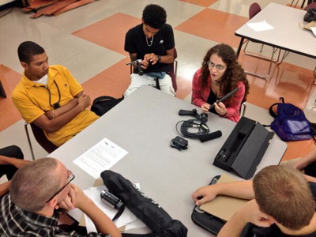

Hear Me 101 is a year-long program based in public schools located in economically disadvantaged neighborhoods. Over the course of a year students create short documentaries from concept to final cut. The goal is to guide students to professionally express their thoughts and opinions on their communities and their education, allowing them to have their voice heard by policy makers.
Hear Me 101 is a program of Carnegie Mellon University's CREATE Lab. I came on-board the team in 2012 through their partnership with Pittsburgh Filmmakers and worked alongside them at McKeesport, Steel Valley, and Clairton High Schools till 2014.
Steel Valley: A Place Worth Investing In
Students from Steel Valley High School in Pittsburgh, Pennsylvania created this documentary to inspire viewers to invest in the Steel Valley region. For this project I assisted students with interviews and worked with them as they edited on iMovie.
Teaching students at McKeesport High School how to use a microphone to record high quality audio during their interviews. During the 2013-2014 school year I lead a class of sixteen students as they developed, produced, and edited documentaries on the educational value of video games, hip hop, and depression in teens. All topics were decided upon by the students themselves, as topics that are important to them and their generation.
Students at McKeesport High School interviewing local musicans, Cello Fury, on the importance of music education in schools. These students were a part of Hear Me 101 during the 2012-2013 school year.